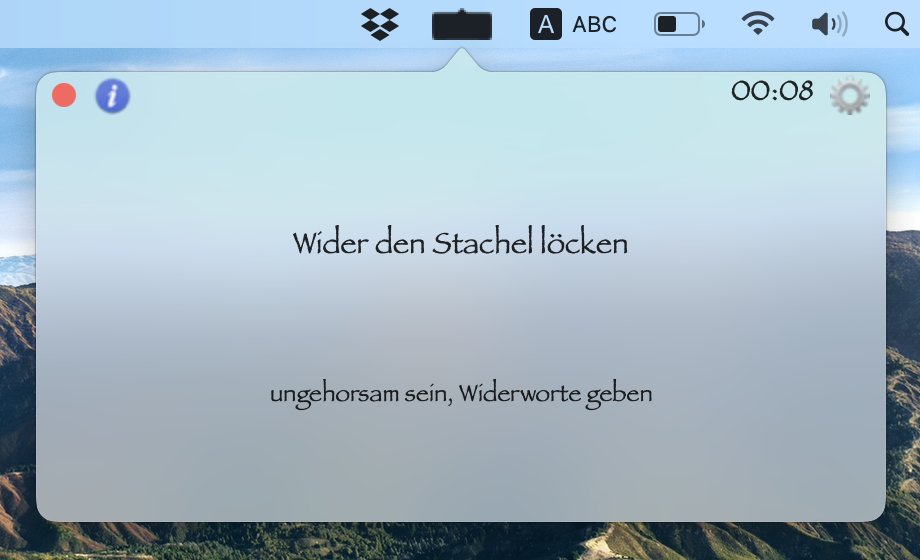
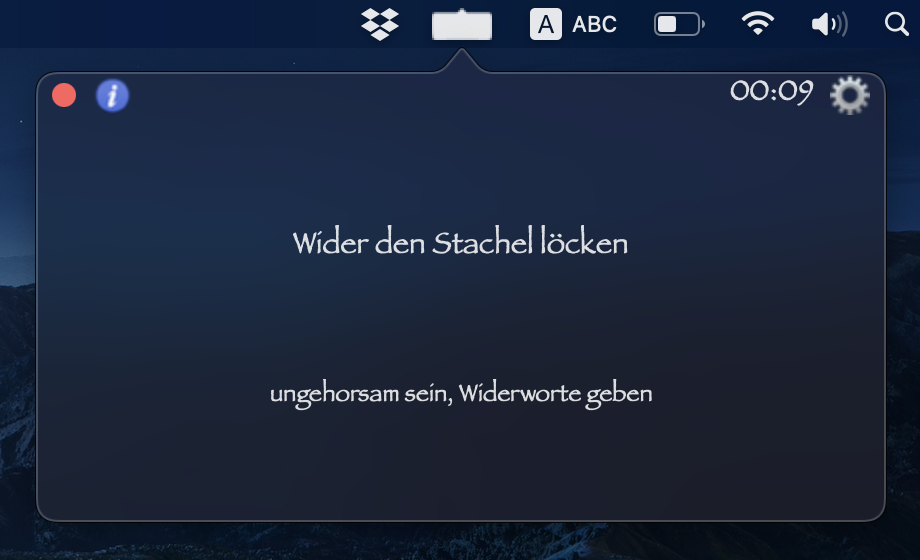

<div class="n-carousel n-carousel--controls-outside">
    <ul class="n-carousel__content">
        <li>
            <h4 style="text-align: center;">
                {% if page.lang == "en" %}
                    Light mode
                {% elsif page.lang == "de" %}
                    Hellmodus
                {% endif %}
            </h4>
            
        </li>
        <li>
            <h4 style="text-align: center;">
                {% if page.lang == "en" %}
                    Dark mode
                {% elsif page.lang == "de" %}
                    Dunkelmodus
                {% endif %}
            </h4>
            
        </li>
    </ul>
    <div class="n-carousel__previous">
        <button></button>
    </div>
    <div class="n-carousel__next">
        <button></button>
    </div>
    <div class="n-carousel__index">
        <button style="min-width: 1em; min-height: 1em; width: 1em; height: 1em;"></button>
        <button style="min-width: 1em; min-height: 1em; width: 1em; height: 1em;"></button>
    </div>
</div>